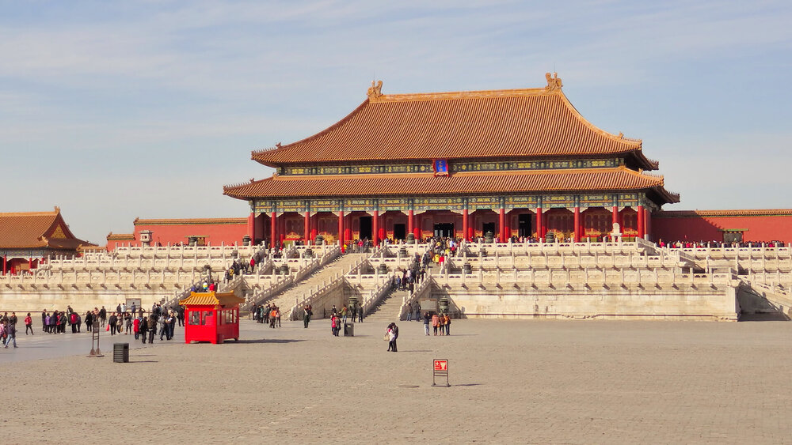
La Ciudad ProhibidaDestinos en china
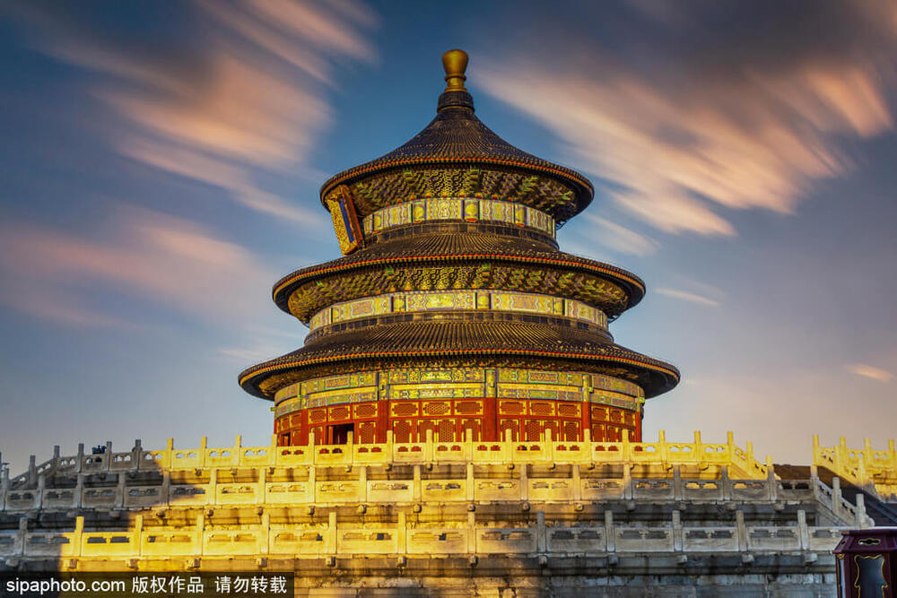
El Templo del Cielo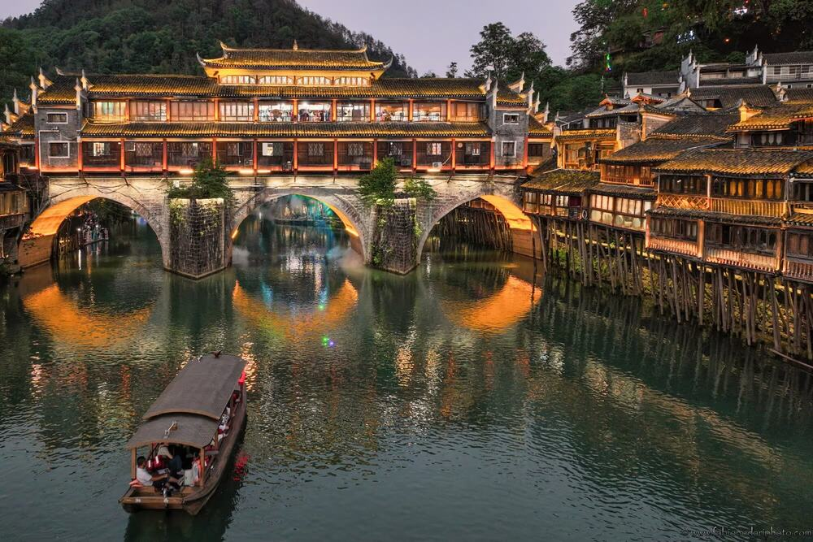
Fenghuang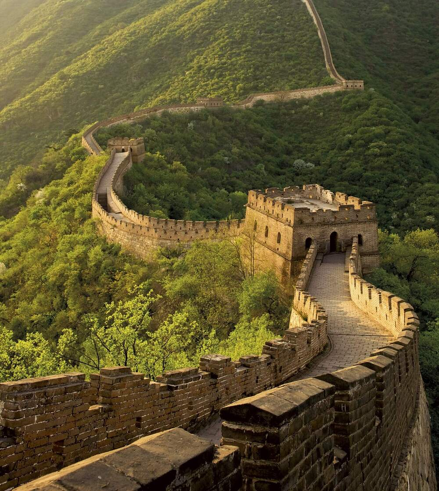
La Gran Muralla China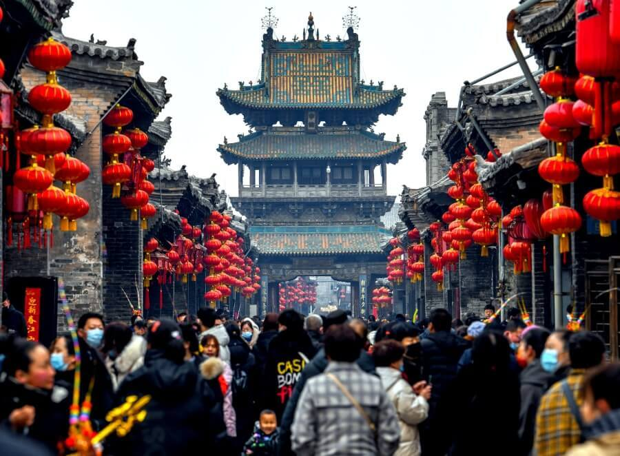
La Ciudad AntigÛa Pingyao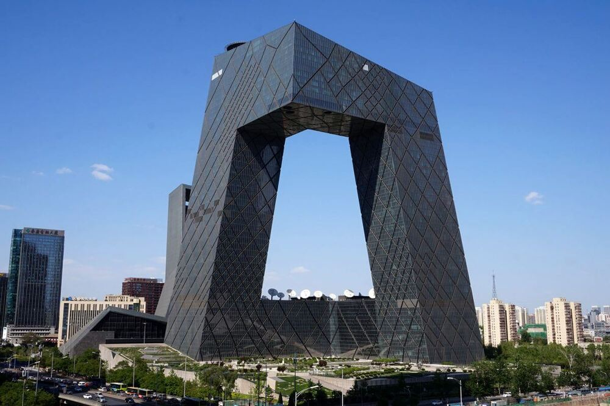
Pekín (Beijing) Xi'an (Chang'an)
Xi'an (Chang'an)
¿Qué hacer en China?
Descubre la riqueza cultural, histórica y natural de China, un país lleno de contrastes donde la tradición y la modernidad conviven. Desde majestuosas murallas y templos milenarios hasta ciudades futuristas y paisajes naturales impresionantes, China ofrece experiencias únicas para todo tipo de viajeros: aventura, cultura, gastronomía y mucho más.
Aventúrate en las montañas flotantes de Zhangjiajie
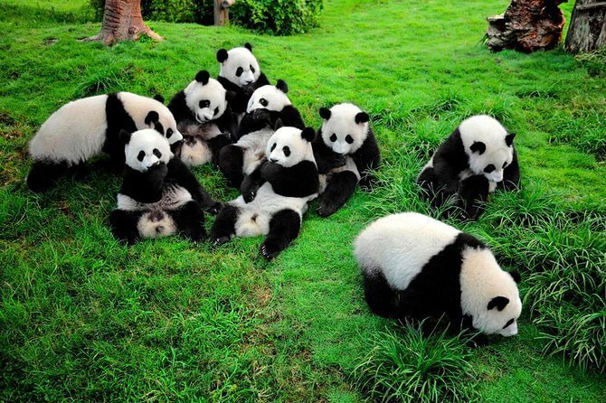
Conoce los osos panda gigantes en Chengdu
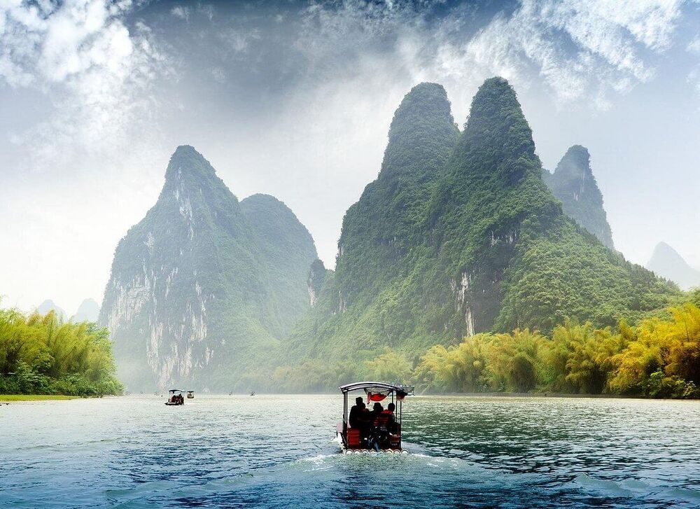
Navega entre paisajes de ensueño en el río Li
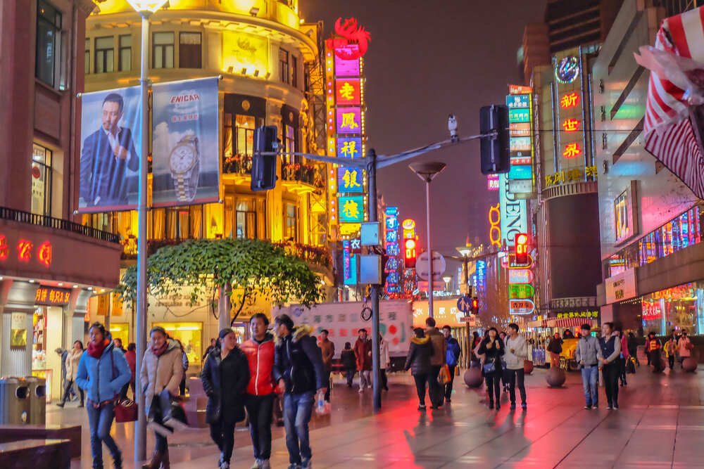
Explora la vibrante vida nocturna de Shanghái
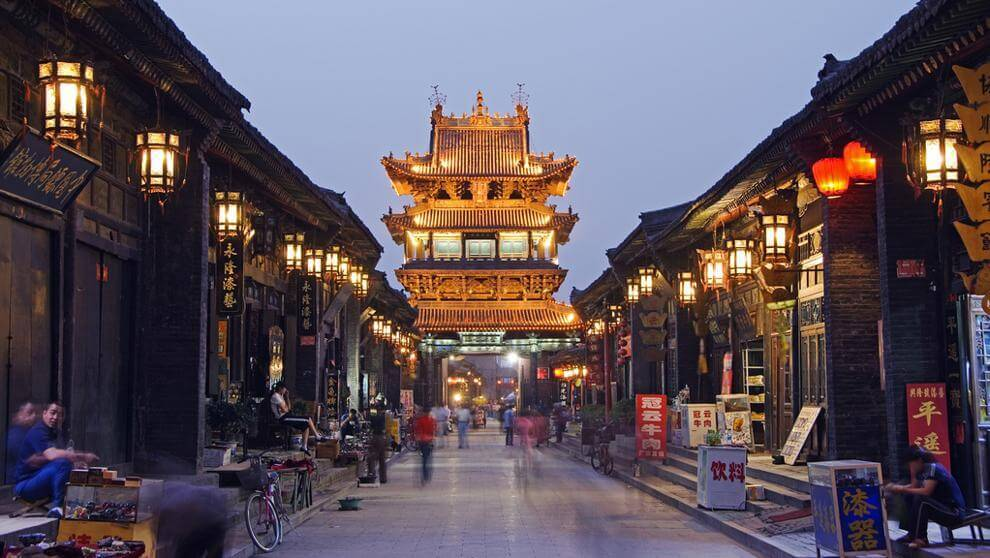
Descubre la antigua ciudad de Pingyao
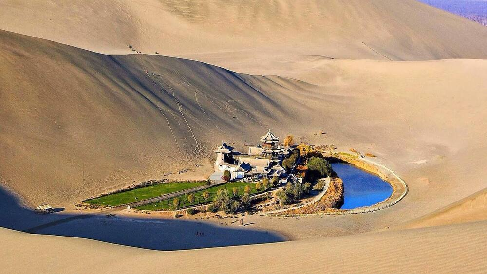
Viaja por la Ruta de la Seda en Dunhuang
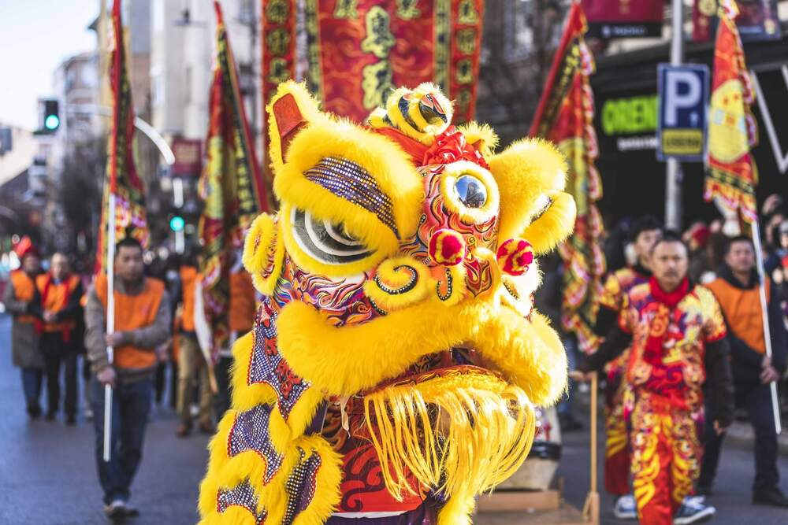
Sumérgete en tradiciones milenarias chinas
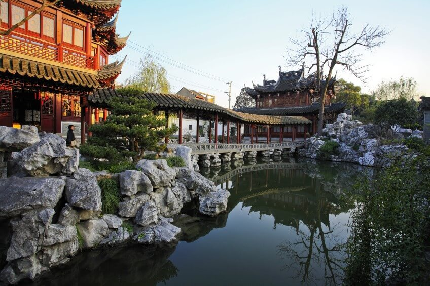
Admira los jardines clásicos de Suzhou
Planifica tu viaje a china
Todo lo que necesitas saber antes de viajar: cultura, destinos y transporte.
Ciudades Icónicas
Descubre lugares como Pekín, Shanghái y Xi’an.
Cultura y tradiciones
Explora templos, murallas y costumbres únicas.
Transporte eficiente
Viaja con trenes rápidos y transporte moderno.
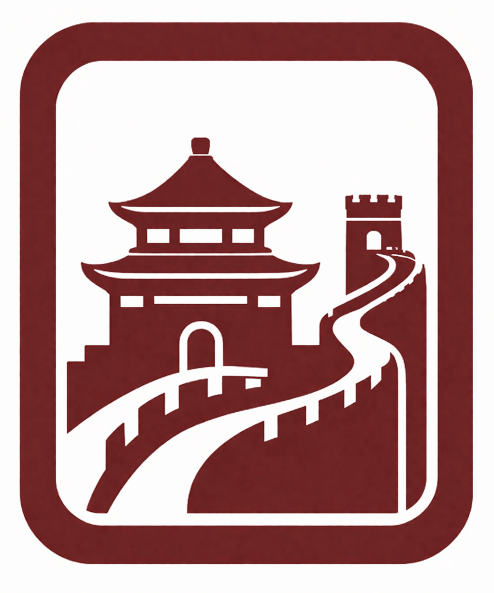
Historia Milenaria
Explora templos, palacios imperiales y la Gran Muralla de China.
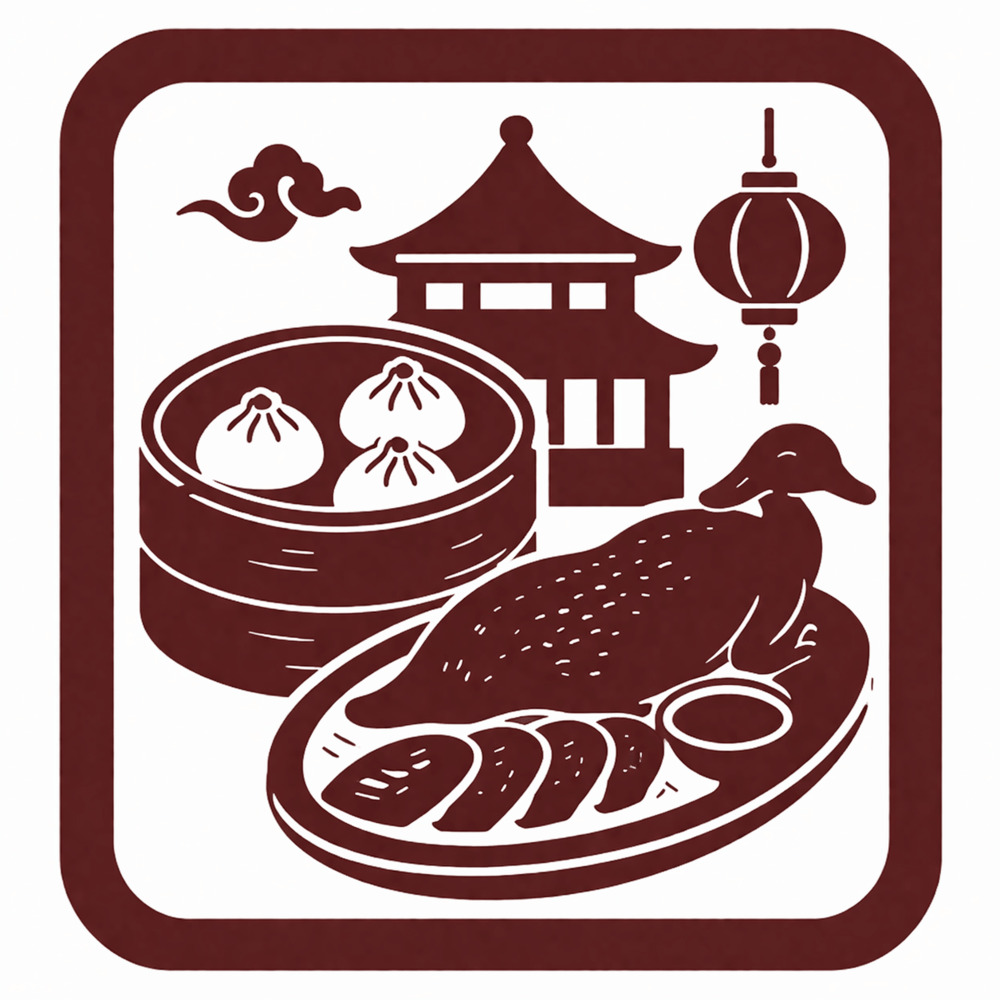
Gastronomía única
Disfruta platos tradicionales como dim sum y pato pekinés.
Movilidad moderna
Viaja rápido con trenes de alta velocidad y transporte eficiente.
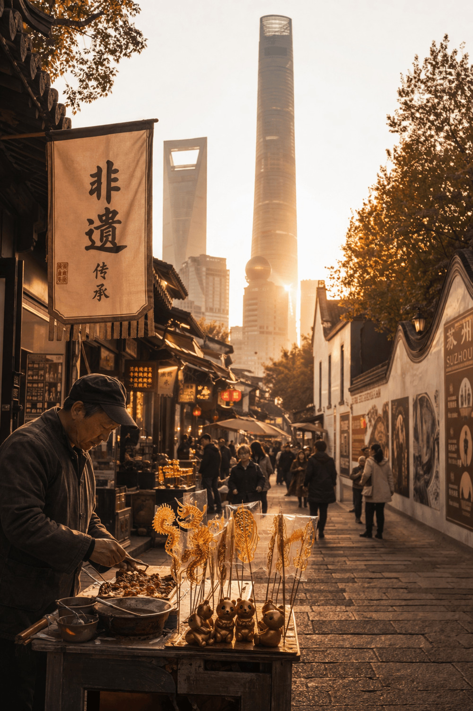
¿Sabías que?
China es uno de los países más antiguos del mundo, con más de 4,000 años de historia. Su cultura, arquitectura y tradiciones han influido profundamente en muchas partes del mundo.
Ver más